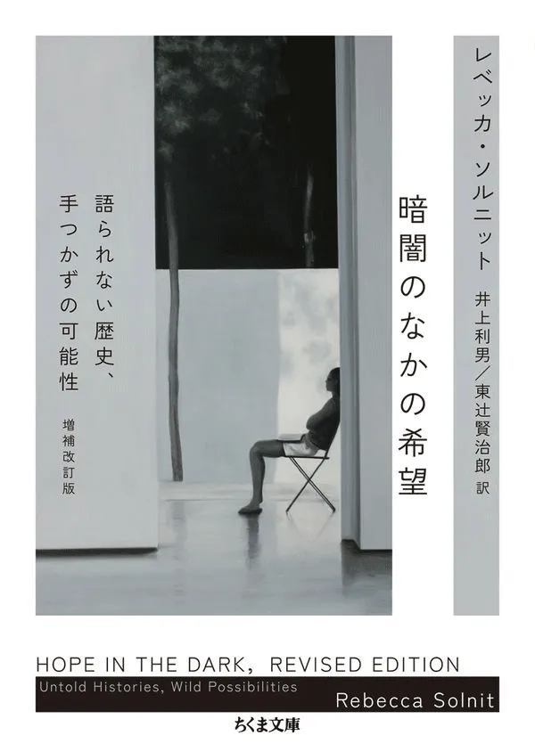

2003年、イラク戦争が始まった時期に、「希望を擁護する」ために本書は書かれた。あの時代は過ぎ去ったが、あらたな戦争が生じ、破壊的な気候変動が到来している。絶望と冷笑主義が残りつづける現代に、希望をもつことはいかに可能なのか。「希望は光を浴びた舞台の真ん中ではなく、周縁の暗がりにある」（本文より）。2016年に改訂され、直接行動と思想を往還する現代の名著を文庫化。
ポストを表示する（Xで開く）